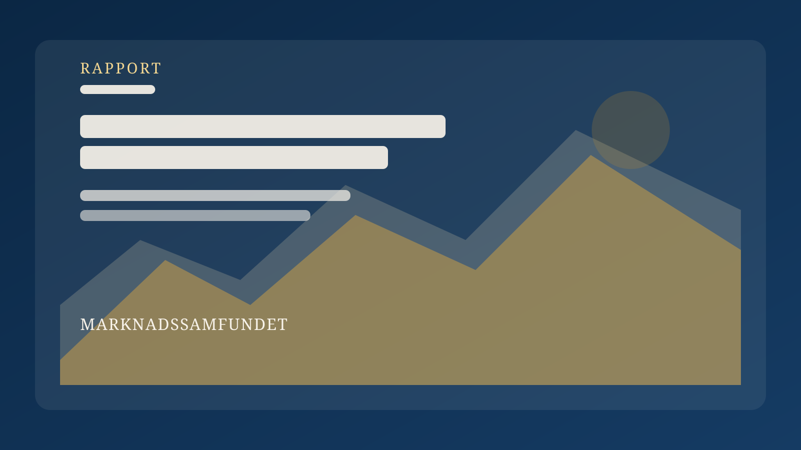
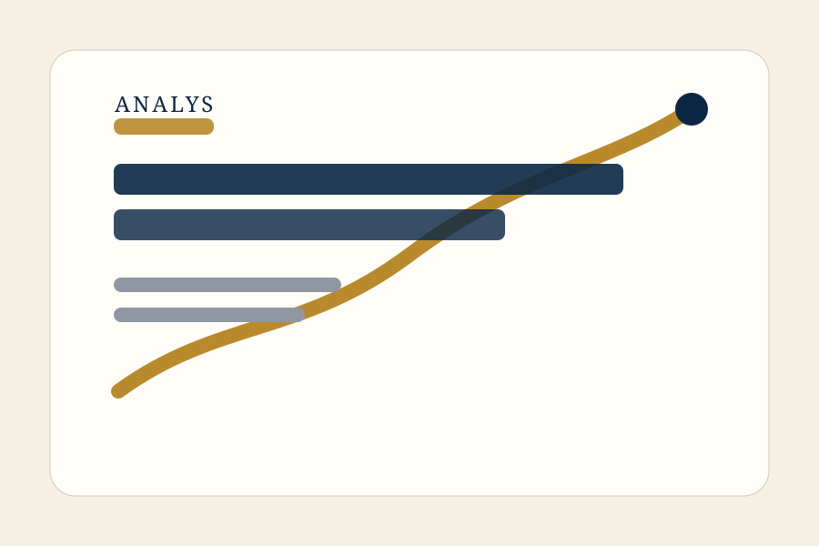
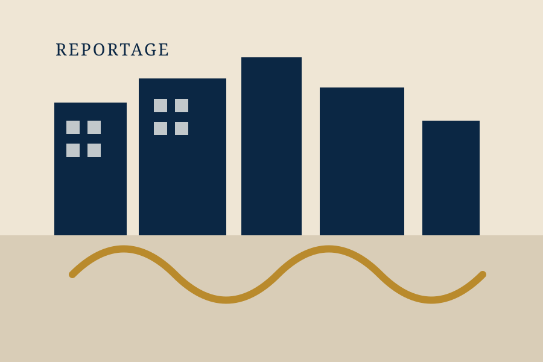
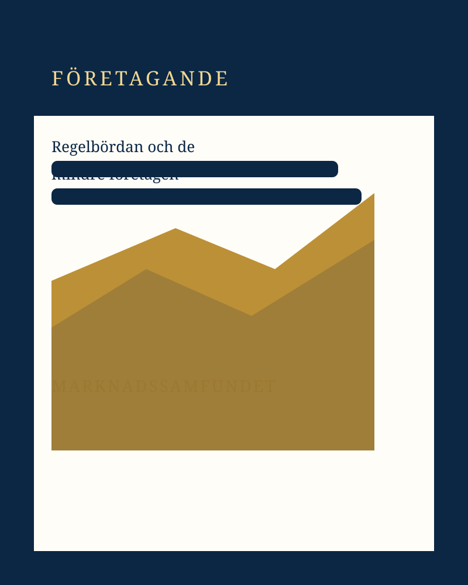

Ny rapportSverige behöver fler marknader – inte fler undantag
En analys av hur regelverk, konkurrens och äganderätt påverkar Sveriges förmåga att skapa välstånd, företagande och långsiktig tillväxt.
Läs rapporten →
Ny rapportEn analys av hur regelverk, konkurrens och äganderätt påverkar Sveriges förmåga att skapa välstånd, företagande och långsiktig tillväxt.
Läs rapporten →
AnalysInstitutioner, äganderätt och konkurrens formar förutsättningarna för företagande.
Fem områden där svensk politik kan öppna för mer ansvar, valfrihet och konkurrens.
En analys av regler, konkurrens och ekonomisk frihet.

Om sambandet mellan ekonomisk frihet, investeringar och produktivitet.
Reglering, byggande och rörlighet i den svenska bostadssektorn.

Hur administrativa krav påverkar entreprenörskap och expansion.
Marknader fungerar bäst när nya aktörer faktiskt kan utmana de gamla.
Förutsägbarhet och enkelhet är själva infrastrukturen för långsiktiga beslut.
Öppna ekonomier bygger relationer, välstånd och motståndskraft.